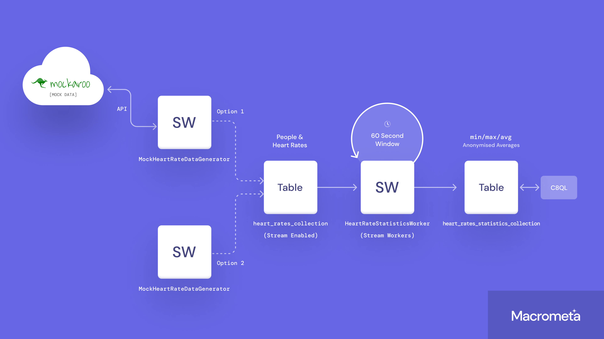
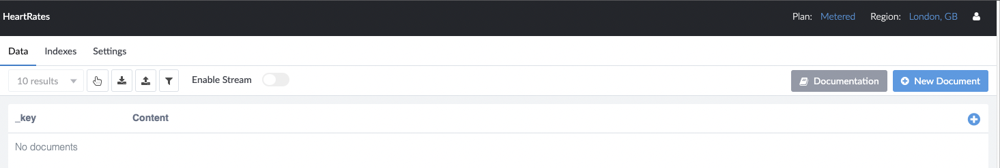
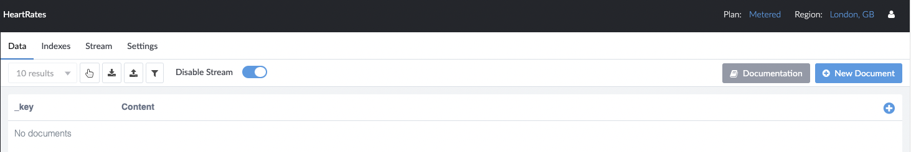
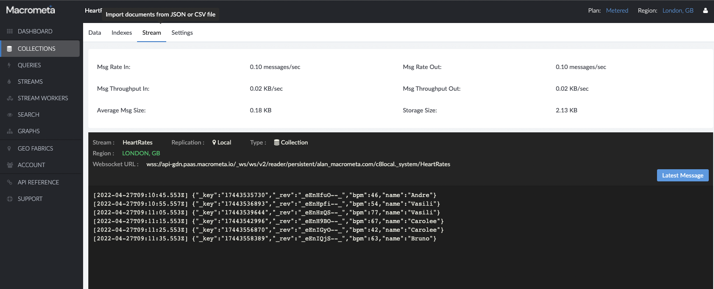

JS08 - Stream Workers
Contents
JS08 - Stream Workers#
Overview#
Macrometa GDN allows you to integrate streaming data and take appropriate actions. Most stream processing use cases involve collecting, analyzing, and integrating or acting on data generated during business activities by various sources.
Stage |
Description |
|---|---|
Collect |
Receive or capture data from various data sources. |
Analyze |
Analyze data to identify interesting patterns and extract information. |
Act |
Take actions based on the findings. For example, running simple code, calling an external service, or triggering a complex integration. |
Integrate |
Provide processed data for consumer consumption. |
You can process streams to perform the following actions with your data:
Transform data from one format to another. For example, from XML to JSON.
Enrich data received from a specific source by combining it with databases and services.
Correlate data by joining multiple streams to create an aggregate stream.
Clean data by filtering it and by modifying the content in messages. For example, obfuscating sensitive information.
Derive insights by identifying event patterns in data streams.
Summarize data with time windows and incremental aggregations.
Real-time ETL for collections, tailing files, and scraping HTTP endpoints.
Integrating stream data and trigger actions based on the data. This can be a single service request or a complex enterprise integration flow.
In this tutorial we will build a simple stream worker for finding various heart rate measures like average bpm, minimum bpm etc.

Pre-requisite#
Lets Assume
you have already made a tenant account, and have a username and password
you have installed the jsc8 drivers as explained in section 01
you have generated an API Key as explained in section 01
you have CEP feature enabled for your tenant/user
#/* run this once to install javascript kernal and jsc8 in google colab, then reload, and then skip this
!npm install jsc8
!npm install -g --unsafe-perm ijavascript
!ijsinstall --install=global # */
1. Importing Libraries & Define Variables#
The first step is to import the libraries we need and define the variables we will be using in this tutorial. This is also the right place to add your GDN login credentials. i.e. your email and password. You will also need to make sure you have specified the correct federation URL. In this example it is “gdn.paas.macrometa.io” and we are using the default geo fabric “_system”.
// Variables - Queries
let fed_url = "https://gdn.paas.macrometa.io";
const token = ""; // <-- Token goes here if applicable
const apiKey = ""; // <-- apiKey goes here if applicable
const geo_fabric = "_system";
const heart_rates_collection = "HeartRates";
const heart_rates_statistics_collection = "HeartRateStatistics";
const heart_rate_statistics_worker = "HeartRateStatisticsWorker";
const mock_heart_rate_data_generator = "MockHeartRateDataGenerator";
let emailId, password;
$$.input(
{ prompt: "Please type the federation url, leave it blank to use the default and press enter: " },
(error, url) => {
if(url)
fed_url = url;
$$.done();
}
);
$$.input(
{ prompt: "Please, type your email and press enter: " },
(error, email) => {
emailId = email;
$$.done();
}
);
$$.input(
{ prompt: "Please, type your password and press enter: ", password: true },
(error, pass) => {
password = pass;
$$.done();
}
);
2. Connecting to GDN#
Now that we have imported the required libraries and added our login details, we can connect to GDN. Do this by running the cell bellow.
You will see the cell output reflect a successful connection. If not go back to the first step and check the details you entered.
const jsc8 = require("jsc8");
// ----- simple way -----
const client = new jsc8(fed_url);
client.useFabric(geo_fabric);
client
.login(emailId, password)
.then((result) => console.log("Login successfully", result))
.catch((err) => console.error("Error while login", err.message));
// ----- with token -----
/* const client = new jsc8({
url: fed_url,
token: token,
fabricName: geo_fabric,
}); */
// ----- with apikey-----
/* const client = new jsc8({
url: fed_url,
apiKey: apiKey,
fabricName: geo_fabric,
}); */
3. Creating Collections#
For this Tutorial we require the creation of two collections. The first will be a collection for the heart rates, which will hold our input data. The second will be a collection for the stream worker output which will hold the statistics.
Run the next cell to create these two collections. Note the If-Else statements that are included in this cell. This lets us check to see if the collections exist already in the federation you are using, if they dont exist we will create them.
const createCollection = async () => {
console.log("\n 3. CREATE_COLLECTION");
try {
console.log(
`Creating the HEART_RATES_COLLECTION ${heart_rates_collection}...`
);
let isCollectionExists = await client.hasCollection(heart_rates_collection);
if (!isCollectionExists) {
await client.createCollection(heart_rates_collection, { stream: true });
}
console.log(
`Creating the HEART_RATES_STATISTICS_COLLECTION ${heart_rates_statistics_collection}...`
);
isCollectionExists = await client.hasCollection(
heart_rates_statistics_collection
);
if (!isCollectionExists) {
await client.createCollection(heart_rates_statistics_collection);
}
} catch (err) {
console.error("Collection creation did not succeed due to " + err.message);
}
};
createCollection();
Note: for this to work you need to enable the collection stream from the Macrometa Dashboard. Do this by opening up the dashboard, select collections, find the collection named “HeartRates” and select “Enable Stream”


4. Validate Stream Application#
Now that we have created our collections we need to decide how we want to simulate the heart rate information. in this section we offer two approaches for simulating this data.
Option 1, is to use a 3rd party tool called “Mockaroo” that will let you generate the data stream as an external source to Macrometa GDN. This would be closest to a “real world” use case showing data coming into GDN (and our streamworker) from an external source.
Option 2. demonstrates how Macrometa GDN Stream Workers can also be used to provide simulation data, or indeed the streaming of data from a collection.
The end result will be the same, however for simplicity please select one option or the other, not both.
Select the option you are going to use, and run the code in the corresponding cell.
4.1 Validating heart rate simulator definition#
Option1: Use mockaroo api to generate the mock heart rate data#
NOTE: If you are using mockaroo API then you need to signup to mockaroo and paste the API Key. You can find API key here https://www.mockaroo.com/myaccount
In this Stream Worker we have created a trigger that triggers every 10 seconds and connects to the Mockaroo API Service and passes the current time stamp to trigger the Mockaroo data generation.
Then the Stream Worker consumes data received from the external Mockaroo service, selects the persons name and their heart rate and puts it into the collection “HeartRates”.
Stream Workers are written in JavaScript, the Cell bellow has two variables: one for your Mackroo API Key, and the other “dataGeneratorAppDefinition” is passed as input for the StreamWorker code.
const mockarooAPIKey = "XXXX";
const dataGeneratorAppDefinition = `
@App:name('MockHeartRateDataGenerator')
@App:description('Mock data generator by calling mockaroo api for heart rate')
@App:qlVersion('2')
CREATE TRIGGER HeartRateDataGeneratorTrigger WITH ( interval = 10 sec );
CREATE TABLE HeartRates (name string, bpm int);
CREATE SINK MockarooServiceCallSink WITH (type='http-call', sink.id='mockaroo-service', publisher.url='https://api.mockaroo.com/api/a6e130b0?count=10&key=${mockarooAPIKey}', map.type='json', method='GET') (triggered_time string);
CREATE SOURCE MockarooServiceResponseSink WITH (type='http-call-response', sink.id='mockaroo-service', map.type='json', http.status.code='200') (name string, bpm int);
INSERT INTO MockarooServiceCallSink
SELECT time:currentTimestamp() as triggered_time
FROM HeartRateDataGeneratorTrigger;
-- Note: Consume data received from the external service
@info(name = 'ConsumeProcessedData')
INSERT INTO HeartRates
SELECT name, bpm
FROM MockarooServiceResponseSink;
`;
Option2: Use custom stream worker to generate the heart rate data#
In this Stream Worker we have created a trigger that triggers every 10 seconds and creates random data from a short list of people and possible heart rates and puts it into the collection “HeartRates”.
Stream Workers are written in JavaScript, the Cell bellow has one variable, “dataGeneratorAppDefinition”, it is a string type that passed as input for the StreamWorker code
const dataGeneratorAppDefinition = `
@App:name("MockHeartRateDataGenerator")
@App:qlVersion("2")
CREATE TRIGGER HeartRateDataGeneratorTrigger WITH ( interval = 10 sec );
CREATE TABLE HeartRates (name string, bpm int);
-- Note: Generating random bpm and name
@info(name = 'ConsumeProcessedData')
INSERT INTO HeartRates
SELECT
js:eval("['Vasili', 'Rivalee', 'Betty', 'Jennifer', 'Alane', 'Sarena', 'Bruno', 'Carolee', 'Emmott', 'Andre'][Math.floor(Math.random() * 10)]","string") as name,
js:eval("Math.floor(Math.random() * 40) + 40","int") as bpm
FROM HeartRateDataGeneratorTrigger;
`;
4.2 Validating stream worker#
Now that we have selected and run the cell code for our chosen method of generating data, we can move on to the next stream worker, and then validate them for correctness, before we publish them, and make them active.
This next cell introduces the second stream worker that reads the heart rates from the collection “HeartRates” in a sliding window of 1 min, and then calculates the min, max and averages for that window, and inserts them into the collection “HeartRateStatistics”. it is defined as a string and assigned to the “statisticsAppDefinition” variable.
We then validate the streams by using the “validate_stream_app” method, as shown below.
const statisticAppDefinition = `
@App:name('HeartRateStatisticsWorker')
@App:description("Calculate the statistics for heart rates")
@App:qlVersion("2")
CREATE SOURCE HeartRates WITH (type = 'database', collection = "HeartRates", collection.type="doc", replication.type="global", map.type='json') (name string, bpm int);
CREATE TABLE HeartRateStatistics (eventTime long, name string, minBpm int, maxBpm int, avgBpm double);
INSERT INTO HeartRateStatistics
SELECT
eventTimestamp() as eventTime,
name as name,
min(bpm) as minBpm,
max(bpm) as maxBpm,
avg(bpm) as avgBpm
FROM HeartRates window sliding_time(1 min)
group by name
`;
const validateStreamApp = async () => {
try {
console.log(`\n 4. VALIDATE_STREAM_WORKERS ... region ${fed_url}`);
console.log("--- Validating Stream Application Definition");
let result = await client.validateStreamApp(statisticAppDefinition);
console.log(
`--- Validated Stream Application Definition ${heart_rate_statistics_worker} ---`,
result.message
);
result = await client.validateStreamApp(dataGeneratorAppDefinition);
console.log(
`--- Validated Stream Application Definition ${mock_heart_rate_data_generator} ---`,
result.message
);
} catch (err) {
console.error("Error while validating streamApp :", err.message);
}
};
validateStreamApp();
5. Save Stream Application#
Upon a successful validation we can save our streamworkers by running the following cell.
const createStreamApp = async () => {
try {
console.log(`\n 5. CREATE_STREAM_WORKERS ... region ${fed_url}`);
let result;
console.log("--- Creating Stream Application");
let streamAppList = await client.retrieveStreamApp();
streamAppList = streamAppList.streamApps.map((streamApp) => streamApp.name);
// The stream app will be created by default in the local region. Optionally, you can send dclist to deploy stream
if (!streamAppList.includes(heart_rate_statistics_worker)) {
result = await client.createStreamApp([], statisticAppDefinition);
console.log(
`--- Created Stream Application ${heart_rate_statistics_worker} ---`
);
}
if (!streamAppList.includes(mock_heart_rate_data_generator)) {
result = await client.createStreamApp([], dataGeneratorAppDefinition);
console.log(
`--- Created Stream Application ${mock_heart_rate_data_generator} ---`
);
}
} catch (err) {
console.error("Error while creating streamApp :", err.message);
}
};
createStreamApp();
6. Publish Stream Application#
A saved stream worker does not mean it is active. For the Stream Worker to be active it needs to be Published. Run the code in the next cell to publish the stream worker and make it active.
const activateStreamApp = async () => {
try {
console.log(`\n 6. Activating Stream Workers`);
await client.activateStreamApp(heart_rate_statistics_worker, true);
await client.activateStreamApp(mock_heart_rate_data_generator, true);
console.log(`6. Activated Stream Workers`);
} catch (err) {
console.error("Error while publishing streamApp :", err.message);
}
};
activateStreamApp();
7. Checking HeartRates documents using C8QL#
Now we have activated our stream workers the application is live. However, because we are using a 1 min window, we need to wait for 1 minute before we check for records being created.
A good way to do this is that rather counting 60 seconds, is to load the GDN dashboard, select the “HeartRate” Collection, then “stream” and monitor the console. as soon as their are changes, you will see them reflected here.

Alternatively, wait 60 seconds, and run the code in the cell below.
// Please wait for 1 minute after executing above step as we used sliding window of 1 minute
let c8Queries = async () => {
try {
console.log(`\n 7. LIST_HEART_RATE_DATA in region ${fed_url}`);
let docs = await client.executeQuery(
`FOR doc IN ${heart_rates_collection} LIMIT 0, 5 RETURN doc`
);
console.log(docs);
} catch (err) {
console.error("Error while fetching documents :", err.message);
}
};
c8Queries();
8. Checking HeartRateStatistics documents using C8QL#
Now that we have started to collect data in the HeartRates collection, we want to see our analysis. run the cell below to see the output from our stream worker!
c8Queries = async () => {
try {
console.log(
`\n 8. LIST_HEART_RATE_STATISTICS_DATA in region ${fed_url}`
);
let docs = await client.executeQuery(
`FOR doc IN ${heart_rates_statistics_collection} RETURN doc`
);
console.log(docs);
} catch (err) {
console.error("Error while fetching documents :", err.message);
}
};
c8Queries();
9. Time to tidy up!#
Almost done. Lets clean up after ourselves and remove the tutorial from GDN.
const deleteData = async () => {
try {
console.log("\n 9. DELETE_DATA");
await client.deleteStreamApp(heart_rate_statistics_worker);
await client.deleteStreamApp(mock_heart_rate_data_generator);
await client.deleteCollection(heart_rates_collection);
await client.deleteCollection(heart_rates_statistics_collection);
console.log("StreamApps and Collections deleted");
} catch (err) {
console.error(
"Error while deleting streamApps and collections:",
err.message
);
}
};
deleteData();
Section Completed!#
Congratulations! you have completed this tutorial.